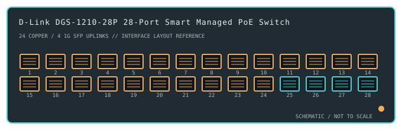

[ MODEL-SPECIFIC NETWORK HARDWARE ]
D-Link DGS-1210-28P 28-Port Smart Managed PoE Switch
A smart-managed access switch with 24 Gigabit PoE copper ports and four dedicated Gigabit SFP uplinks.

IDENTIFICATION: Confirm the complete product label and hardware revision before applying power, firmware or transceiver assumptions. Link and fabric rates below are nominal vendor specifications, not test results.
Detailed specifications and compatibility
| Subcategory | Managed switches |
|---|---|
| Exact product and model | D-Link DGS-1210-28P 28-Port Smart Managed PoE Switch |
| Ports / physical interface | 24 × 10/100/1000BASE-T RJ-45 PoE ports and 4 × 1GbE SFP uplink slots, for 28 physical interfaces. The SFP slots are separate from copper ports. |
| Bus and host connection | 1U rack-mount smart switch; endpoints connect over switched Ethernet, while uplinks require compatible 1GbE SFP modules and optical media. |
| Nominal switching performance | 56Gb/s switching capacity stated for the 28-port Gigabit configuration. This nominal switching-fabric figure is not a measured application test. |
| Power over Ethernet | Supports IEEE 802.3af/at PoE on the copper access ports with a shared budget up to 193W per product data. Actual per-port and aggregate power depend on PoE class, supply and firmware protection. |
| Management and software | D-Link SmartConsole and web management provide VLAN, QoS, loop prevention and surveillance/voice features subject to hardware revision and firmware. No client OS NIC driver is needed. |
| Power and physical form | AC-powered rack-mount switch with internal supply and active cooling. Confirm product revision, mains requirements and available PoE power from the unit label. |
| Compatibility | Connect standards-compliant PoE endpoints without exceeding per-port/total budget. SFP links are 1GbE; check D-Link qualified modules, wavelength, fiber mode and remote optics. Use revision-matched web interface/firmware. |
| Variant identification | DGS-1210-28P is a PoE smart-managed model; DGS-1210-28 (without P) and different hardware revisions have different power and software characteristics. Do not infer PoE budget from another revision. |
| Measured throughput | No physical sample was benchmarked for this record. Nominal line rate and switching-fabric ratings are not measured application throughput. |
Revision-specific use notes
DGS-1210-28P is a PoE smart-managed model; DGS-1210-28 (without P) and different hardware revisions have different power and software characteristics. Do not infer PoE budget from another revision.
Connect standards-compliant PoE endpoints without exceeding per-port/total budget. SFP links are 1GbE; check D-Link qualified modules, wavelength, fiber mode and remote optics. Use revision-matched web interface/firmware.
D-Link SmartConsole and web management provide VLAN, QoS, loop prevention and surveillance/voice features subject to hardware revision and firmware. No client OS NIC driver is needed.
Archival, ESD and preservation notes
Record the full SKU and hardware revision, serial/date code, firmware release, supply label, installed transceiver identifiers and physical port test results. Keep configuration backups free of credentials and private network details.
Disconnect mains and attached PoE loads before service. Keep optics capped and store transceivers separately with their wavelength, fiber mode and part number recorded.
Manufacturer sources
- D-Link DGS-1210-28P hardware revision B manual (PDF)Manufacturer product or model-specific technical documentation. Verify the exact SKU, hardware revision, region and firmware.
- IEEE 802.3 Ethernet and PoE standardsManufacturer product or model-specific technical documentation. Verify the exact SKU, hardware revision, region and firmware.
Confirm the source's revision/region applicability against the item label. Manufacturer link rates and capacity ratings are not measurements of application-level throughput.